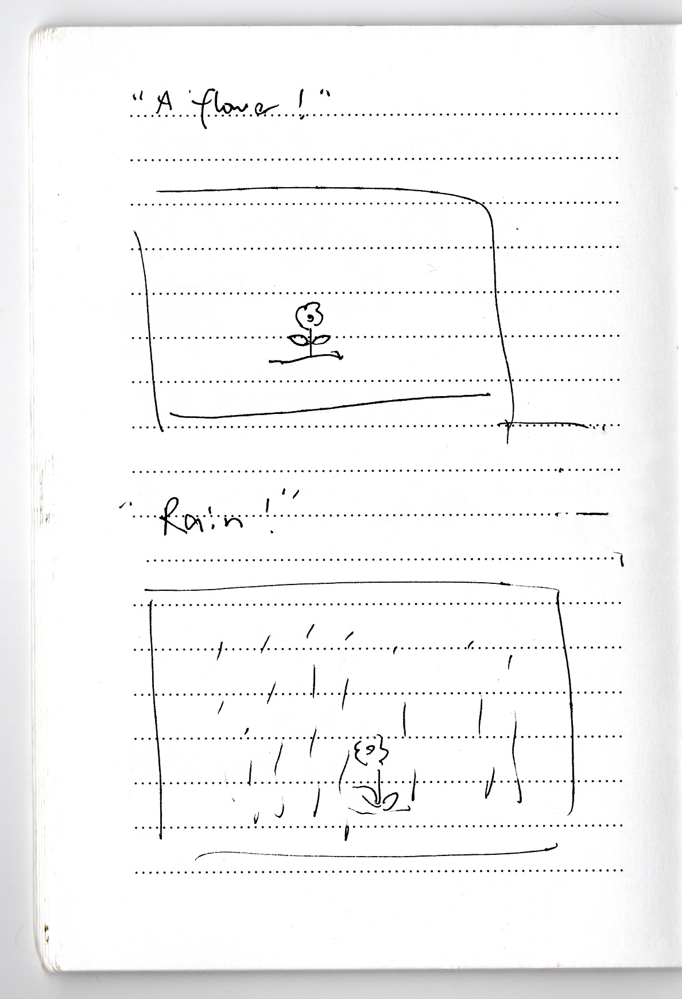
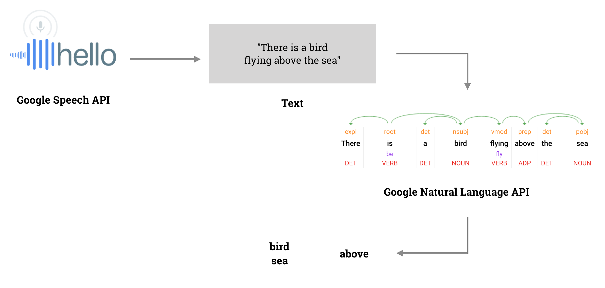
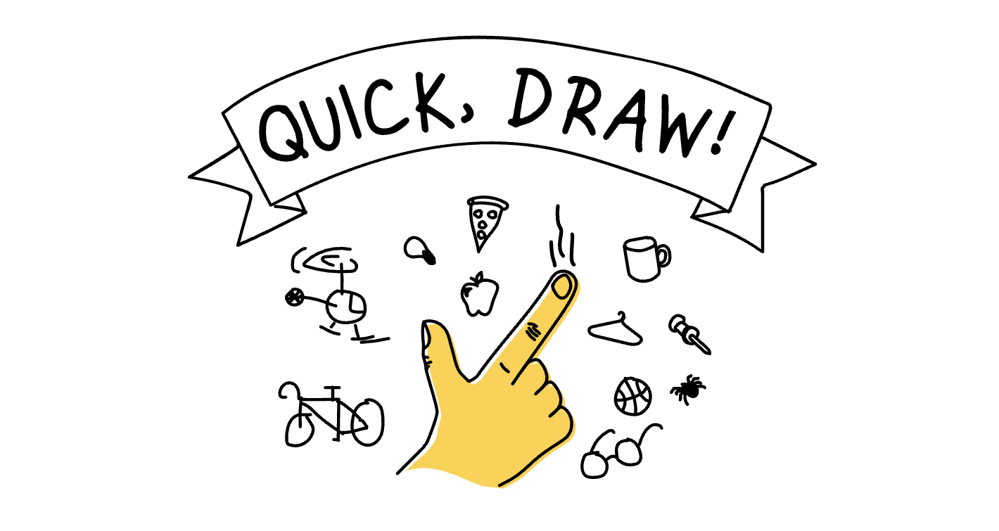
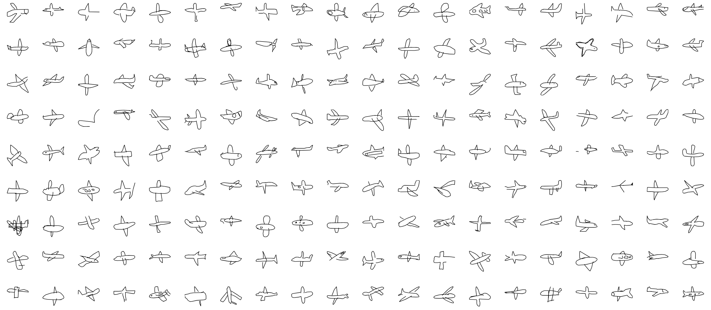
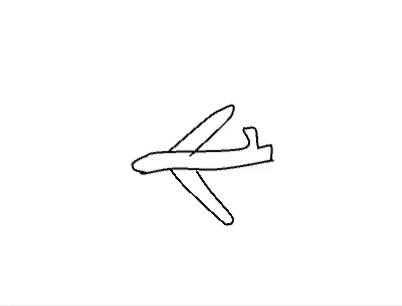
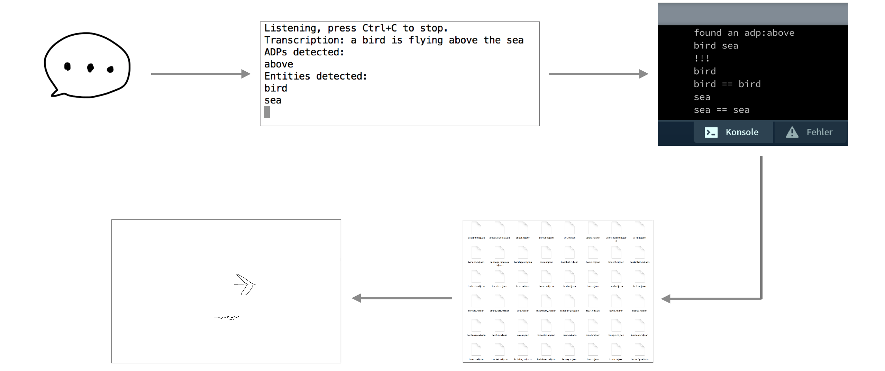

Supervised by Prof. Carola Zwick
Bachelor Project, July 2018
Tools:
Google Speech API, Google Natural Language API, Quickdraw Dataset, Processing
Idea:
Language and images are closely intertwined: We think in pictures
and we explain facts as spatial constellations. What if the spoken
word could be transformed into dynamic visual worlds in real time?
Speech input, machine learning and recurrent neural networks for
image generation allow to com- puter generate complex imaginary
worlds that follow the narrator and thus create complex animations
controlled by linguistic structures.

Create a Virtual World while Speaking
In the model, the objects have their default position value x, y,
and z index. A camera has been applied to open our eyes to see this
world.
"I'm going to the house." - Going forward view
"I look to the left/right." - Rotating to the left/right view
Initial Object Position
SkyObject: clouds, sun, moon, airplane, stars...
AirObject: butterfly, bird, mosquito...
FloorObject: house, flowers, building, apple, girl, shoes...
Input - Spoken Words
Real time Voice Recognition and Multi language Detection
With Google Speech API and Google Natural Language API, it is able to extract nouns and adpostions like "above","under"
and so on from the real time streaming.
RecognizeStream, getEntities and analyzeSyntax are used to realize the input part.
For example. "There is a bird flying above the sea", the computer will return "sea", "bird" and "above"
in the end.
Besides, not only English can be recognized, but also many other languages like Chinese, French, German and so on.

Realtime Speech Recognition Demo (Please enable audio)
Realtime Speech Recognition Demo in Chinese
Output - Animated Drawings
Quickdraw Dataset
Quick, Draw! is an AI experiment from Google that has delighted
millions of people across the world. The game asks users to draw a doodle,
then the game’s AI tries to guess what it is.
The richness and the huge amount of data as well as the simplicity
of human doodlings, which contains a common understanding of
human depicted common objects. It is a visual language of
stereotypes of flower”, “mountain”, “cloud”, “river” etc. Over a
billion doodles have been drawn by people playing the game and
subsequently collected into this anonymized dataset.


different airplanes drawn by different people in Quickdraw

Creating a sense of hand drawn animation

Process from free speech to animation
Demo
Talking in English (Please enable audio)
Talking in Chinese (Please enable audio)
User interacting with Scribbling Speech
Visualisation of the created 3D space